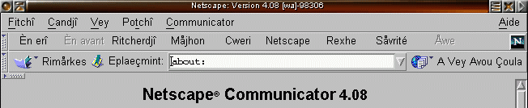

1990
The web needed life
Tim Berners-Lee's WorldWideWeb browser exists — but pages are static documents. No buttons that react, no interactivity at all.
An illustrated, click-and-run textbook for your first real look under the hood of JS.
Start Reading ↓A language written in 10 days, named after a rival, and standardized to stop a war between browsers. Buckle up.
Tim Berners-Lee's WorldWideWeb browser exists — but pages are static documents. No buttons that react, no interactivity at all.
Netscape Navigator holds roughly 80% of the browser market — it's the default way the world sees the web.
Netscape hires Brendan Eich to build a scripting language for the browser — under pressure to ship before Microsoft. He builds the first version of JS in about 10 days.
Mocha → LiveScript → JavaScript. The final rename was pure marketing — riding on Java's hype — even though JavaScript and Java are almost entirely unrelated languages.
Microsoft reverse-engineers JavaScript for Internet Explorer — but has to call it JScript, since Netscape owns the "JavaScript" trademark. Compatibility chaos begins.

The "browser wars" era: sites broke depending on which browser opened them.
To end the Netscape-vs-Microsoft mess, JS is submitted to ECMA International as a standard: ECMA-262 (ECMAScript). Simply put — now your code works the same everywhere, no matter which browser runs it.
jQuery and AJAX let pages update data without a full reload. JS starts becoming a real application language, not just a page decorator.
JS escapes the browser and can now run on servers. This is the bridge to what you'll learn in the Node.js session on Day 2.
The big modern overhaul: let/const, arrow functions, promises, classes. Almost everything in this course is built on ES6.
JS runs in browsers, servers (Node), mobile apps, and desktop apps. One language, almost everywhere you look. That's why it's worth learning properly — starting now.
HTML gives structure, CSS gives style — but nothing reacts to the user without JavaScript.
nothing happens, forever.
try it →
Before JS runs a single line, it prepares in two phases: memory first, then execution.
Scans the code and allocates memory for every variable & function before running anything.
var name→ undefinedfunction greet(){}→ whole functionRuns code line by line, assigning real values and actually executing calls.
name = "John"→ "John"greet()→ runs itfunction greet() {
console.log("hi from function");
}
console.log(typeof greet); // "function" — hoisted fully
greet();
var declarations are "hoisted" to the top of their scope and initialized as undefined — before your code even runs.
console.log(name); // undefined var name = "John"; console.log(name); // John
let and const are hoisted too — but stay in a "dead zone" where touching them throws an error, until the line that declares them runs.
console.log(age); // ReferenceError let age = 25;
Every function call creates its own execution context, nested inside the one that called it.
JS keeps track of "where it is" using a stack — functions get pushed on when called, popped off when they return.
A mini "devtools" simulation — click the gutter next to a line to drop a breakpoint, then press Run. Step manually any time with Prev/Next.
printSquare(5).In the browser, everything global — your variables, functions, and the DOM — hangs off one big object: window.
var greeting = "hi"; console.log(window.greeting === greeting); // true
A function can "see" variables from where it was written, by walking up through its parent scopes.
let count
count++ ← looks up chain
function makeCounter() {
let count = 0;
return function () {
count++;
return count;
};
}
const counter = makeCounter();
console.log(counter()); // 1
console.log(counter()); // 2
A callback is just a function handed to another function, to be called later.
function greeting(name) {
console.log("Hello " + name);
}
function processInput(callback) {
let name = "John";
callback(name);
}
processInput(greeting);
JavaScript can only do one thing at a time — this is exactly why "blocking the thread" is a real, visible problem, and exactly why the event loop (next up) has to exist.
JavaScript has exactly one call stack and runs on one thread — it can only do one thing at a time, strictly in order. It can't truly "pause" one task to run another; it has to finish (or hand off) what it's doing first.
This is exactly why a long-running synchronous block "blocks the thread": nothing else — not a click, not a scroll, not even a callback sitting in the queue waiting for its turn — can run until the call stack is empty again.
console.log("Start");
setTimeout(function () {
console.log("This runs later (from the task queue)");
}, 0);
// a synchronous, blocking operation — busy-waits for ~2 seconds
const blockUntil = Date.now() + 2000;
while (Date.now() < blockUntil) {
// the single thread is stuck right here.
// nothing else can run — not even a 0ms timer callback.
}
console.log("End (blocking code finished)");
⚠ Heads up: this really does freeze the whole page for ~2 seconds while it runs — that's the point. It proves the queued setTimeout callback can't enter the call stack, no matter how short its delay, until the busy loop above it finishes.
JS is single-threaded — the event loop is how it still juggles timers, network calls, and clicks without blocking.
The browser gives JS a toolbox beyond the language itself — setTimeout, DOM APIs, fetch, console and more all live on window, run by the browser, not by the JS engine.
The code below is the exact trace driving the diagram underneath it — step through it, or press "Run" here to see the real console output.